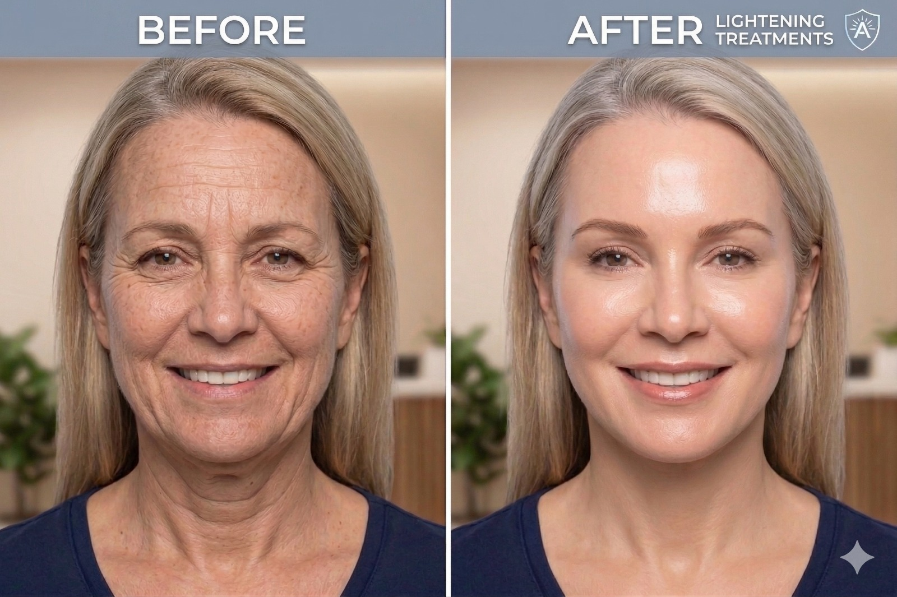
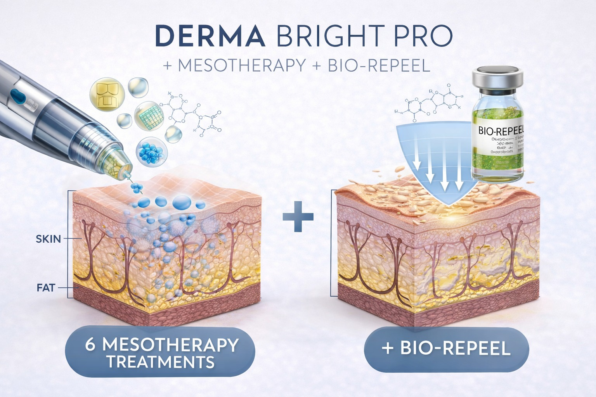

Derma Bright Pro הוא פרוטוקול מתקדם לשיפור פיגמנטציה, החלקת מרקם העור והבהרת גוון הפנים – באמצעות שילוב מדויק בין מזותרפיה פעילה לבין BIO-RE-PEEL רפואי.

הטיפול פועל גם בשכבות העמוקות של העור וגם על פני השטח, ליצירת שינוי אמיתי ולא רק זמני.
🔬 מה כולל הפרוטוקול
6 טיפולי מזותרפיה מתקדמת
שילוב עם BIO-RE-PEEL רפואי
📅
סה״כ: סדרת טיפולים מדורגת לשיפור עומק + פני השטח
⚙️ כיצד עובד Derma Bright Pro
הפרוטוקול מבוסס על עבודה כפולה:
טיפול עומק – מזותרפיה
החדרת חומרים פעילים ישירות לעור באמצעות מיקרו-מחטים:
ויטמינים ומינרלים חיוניים
חומצה היאלורונית
קומפלקסים להבהרה ואנטי-פיגמנטציה
שיפור זרימת דם מקומית
✔️ מגביר ייצור קולגן
✔️ משקם תאי עור פגומים
✔️ מטפל בפיגמנטציה מהשורש
טיפול שטח – BIO-RE-PEEL
פילינג רפואי דו-שלבי הפועל ללא קילוף אגרסיבי:
הסרת תאים מתים
האצת התחדשות העור
הבהרת כתמים
שיפור מרקם וגוון
✔️ מתאים גם לעור רגיש
✔️ ללא זמן החלמה משמעותי
💡 למה השילוב עובד טוב יותר
המזותרפיה פועלת בעומק, וה-BIO-RE-PEEL משפר את פני השטח.
השילוב מאפשר:
טיפול בפיגמנטציה גם מבפנים וגם מבחוץ
האצת תהליך התחדשות העור
שיפור אחידות הגוון
תוצאה מהירה יותר ונראית לעין
📈 תוצאות צפויות

הבהרת כתמים ופיגמנטציה
גוון עור אחיד יותר
מרקם חלק וזוהר
עור חיוני ובריא יותר
שיפור כללי באיכות העור
חשוב לדעת
התוצאות מצטברות לאורך הסדרה וממשיכות להשתפר גם לאחר סיומה.
👤 למי מתאים הטיפול
Derma Bright Pro מתאים במיוחד ל:
פיגמנטציה (שמש / הורמונלית / פוסט-אקנה)
עור עייף וחסר זוהר
גוון לא אחיד
נקבוביות מורחבות
מטופלים המחפשים פתרון מתקדם ללא הליכים פולשניים
✅ יתרונות הפרוטוקול
טיפול עומק + טיפול שטח
מתאים למגוון סוגי עור
ללא זמן החלמה משמעותי
התאמה אישית לכל מטופל
תוצאה טבעית ולא מלאכותית
🗓️ מהלך הטיפול
טיפולי מזותרפיה מבוצעים אחת למספר שבועות
טיפולי BIO-RE-PEEL משולבים בין הטיפולים לחיזוק התוצאה
משך טיפול: כ-30–45 דקות
תדירות: בהתאם לאבחון מקצועי
🔍 אבחון והתאמה אישית
לפני תחילת התהליך מתבצע אבחון מקצועי הכולל:
סוג הפיגמנטציה
עומק הכתמים
רגישות העור
מצב לחות וגמישות
בהתאם לכך מותאם הפרוטוקול לכל מטופל באופן אישי.
🏥 סטנדרט רפואי
הטיפולים מבוצעים תחת נהלים מחמירים ובשימוש בחומרים רפואיים מתקדמים, המאושרים לשימוש קליני.
הדגש הוא על תוצאה מדידה וארוכת טווח – לא רק שיפור זמני.
📅 קביעת התאמה מקצועית
ניתן לתאם שיחת ייעוץ עם נציג רפואי ללא עלות וללא התחייבות, או לקבוע פגישה באופן עצמאי.